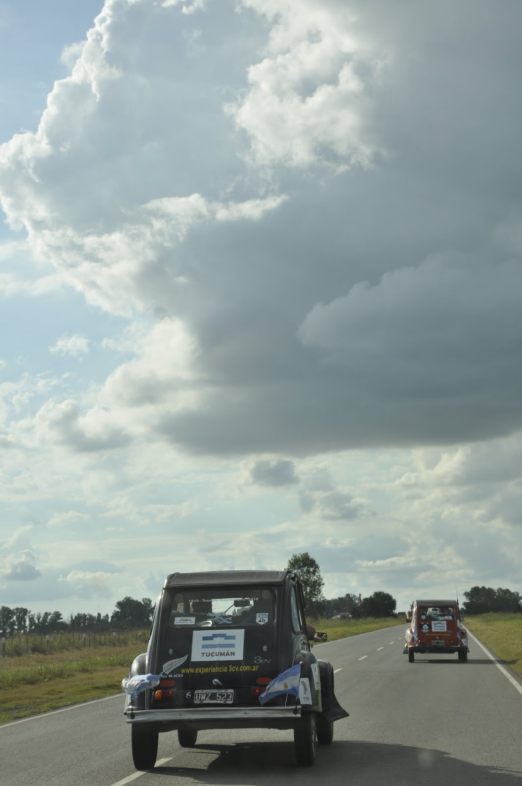
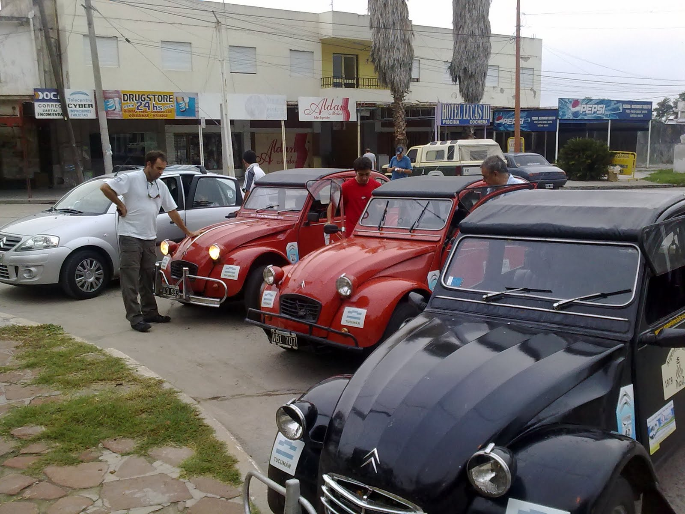
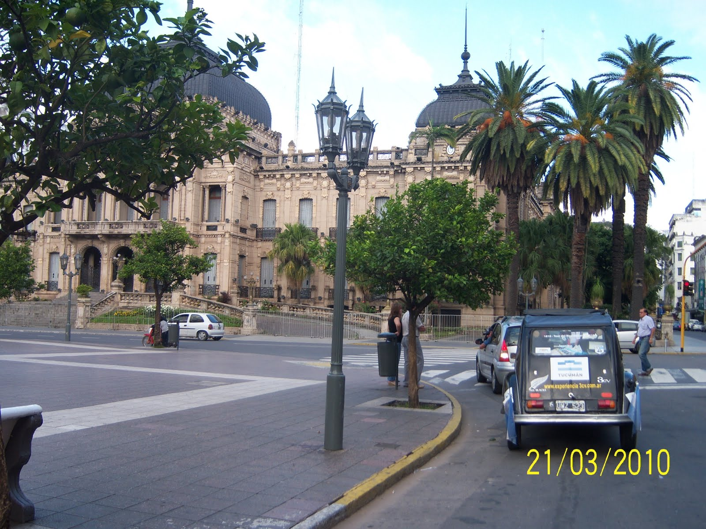
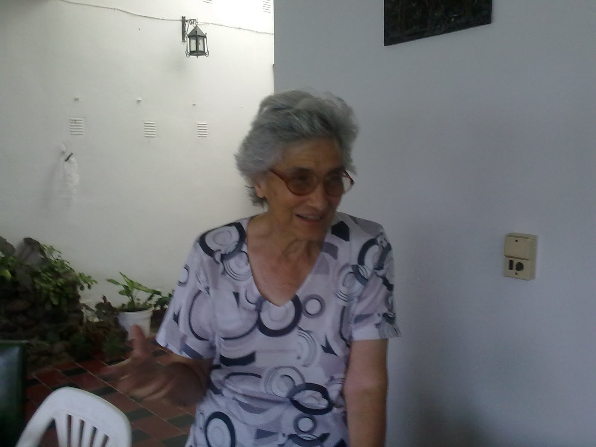

Después de recorrer 1344 Km. se arribó a las 10:15 am a la Ciudad de San Miguel de Tucumán.
El Viaje se presentó sin dificultades, y el clima nos acompañó de una manera muy apacible.
Las Citronaves demostraron sus cualidades y su eficiencia económica a la hora de cargar combustible.
Las paradas fueron: en Rosario la primera, después en Susana, donde nos detuvo por mas de una hora el vuelco de un camión con papel de resma, y por último en Forres donde dormimos unas horas antes de proseguir.

Con los primeros rayos del alba y con las capotas plegadas retomamos la ruta para recorrer los últimos kilómetros. En la foto estamos en la ultima escala: Termas de Rio Hondo.
Para que les voy a contar las sensaciones de ver el amanecer desde el "convertible"!!!!

La llegada a San Miguel nos encontró girando alrededor de la plaza y el centro, y recorriendo las casas de algunos familiares y conocidos de José.
Las urgencias urológicas apremiaban!!!!

La recepción que nos dió Pilar, la Madre de José, fue calurosa y emotiva, ya que en el día de hoy ademas de albergar a su hijo y nieto, nos aloja a todos. De amabilidad extrema, esta gran cocinera, nos estaba esperando con un tradicional kepe. La hambruna de las fieras no dejo ni rastros de tan rica comida.
Recomendaciones: Ver imagen del dia y algunas fotos.
Los mantendremos informados. Abrazo
...Y ya están el el "Jardín de la República"...Y qué bienvenida les ha dado Pilar!! Así da gusto!!
Me alegro que "El Principito", "Mafalda", "All black" y el C3 se hayan portado bien en esta primera etapa. Sigan mandando muchas fotos y compartiendo con nosotros esta "Experiencia Citroën" :)
Adriana
(esposa del citronauta Alfredo -vasco- y mamá del citronauta Pablo)